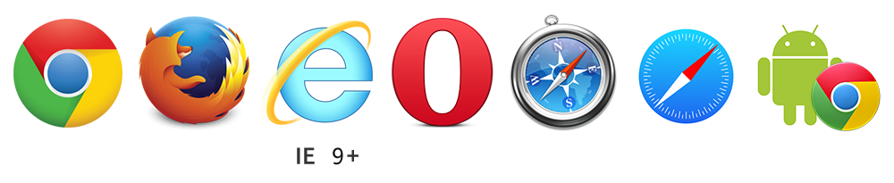

cartoon.js构建高性能动画
HTML5动画
HTML5 提供了基于 CSS3 和 <canvas> 的动画功能，方便我们快速构建 Web 动画
浏览器支持
cartoon.js
基于 CSS3/canvas 的 动画效果库
渲染模式: <canvas>, CSS3 / DOM
主要功能：DisplayObject(显示对象), Shape(图形), Bitmap(图像)
Tween(补间动画), Movement(轨迹运动),
Sprite(帧动画), Timeline(时间轴),
Filters(滤镜), Particles(粒子), Physics(物理模拟)
<!DOCTYPE html>
<html>
<head>
<title>简单实例</title>
<style>
html, body { margin: 0; padding: 0; overflow: hidden; }
</style>
</head>
<body>
<script src="js/three.min.js"></script>
<script>
// Javascript will go here.
</script>
</body>
</html>一个简单的例子
// scene: 显示容器，类似于 html 里的 body, 或者 flash 里的 stage
var scene = new THREE.Scene();
// camera: 摄像机，确定投影视角，将三维场景投影到成可显示的二维图像
var camera = new THREE.PerspectiveCamera( 75, window.innerWidth / window.innerHeight, 0.1, 1000 );
// renderer: 渲染器，结合camera将scene的内容绘制到屏幕上
var renderer = new THREE.WebGLRenderer();
renderer.setSize( window.innerWidth, window.innerHeight );
document.body.appendChild( renderer.domElement ); // 将canvas元素添加到dom树中一个简单的例子
// Geometry：几何图形
var geometry = new THREE.BoxGeometry( 1, 1, 1 );
// Material： 材质
var material = new THREE.MeshNormalMaterial();
// Mesh： 图形网格，基本的3D显示对象，继承 Object3D
var cube = new THREE.Mesh( geometry, material );
scene.add( cube ); // 添加到显示列表
一个简单的例子
camera.position.z = 5; // 调整摄像机的视角
var render = function () {
requestAnimationFrame( render );
cube.rotation.x += 0.1; // 执行旋转的动画
cube.rotation.y += 0.1;
renderer.render( scene, camera ); // 渲染到屏幕
};
render(); // 开始逐帧渲染 输出的结果
Scene Graph

基于Object3D的显示列表
// 类似于dom的树型结构
var group1 = new THREE.Object3D();
var group2 = new THREE.Object3D();
scene.add( group1 );
scene.add( group2 );
group1.add( mesh1 );
group2.add( mesh2 );
group1.children // 子节点集合：[ mesh1 ]
group2.parent // 父节点：sceneObject3D 的三维坐标系
position: Vector3(x, y, z)
rotation: Vector3(x, y, z)
scale: Vector3(x, y, z)
Object3D Transforms
mesh.position.x = 0mesh.position.x = -100mesh.scale.set(2,2,2)mesh.rotation.y = Math.PI / 4mesh.rotation.y = Math.PI * 5 / 4Unit Circle


mesh.rotation.y = THREE.Math.degToRad(45);Thanks davidscottlyons.com/threejs
/